Tsuzuki Lab
Laboratory of Plant Life History and Biodiversity
Institute for Sustainable Agro-Ecosystem Services,
Graduate School of Agriculture and Life Sciences,
University of Tokyo
Life history, or how an organism lives and dies over the whole lifespan, differs among and within species.
For example, some species live for hundreds years, while others for only a few years.
We study life history variations in plants to reveal the mechanisms by which biodiversity is formed and maintained.
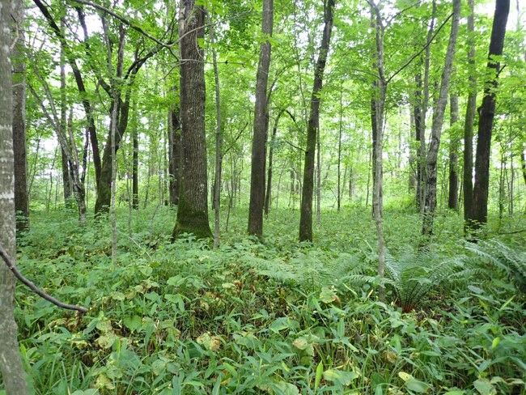
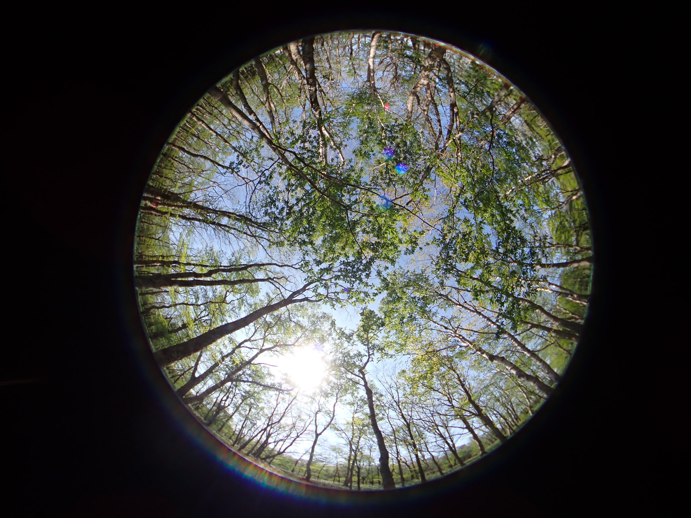
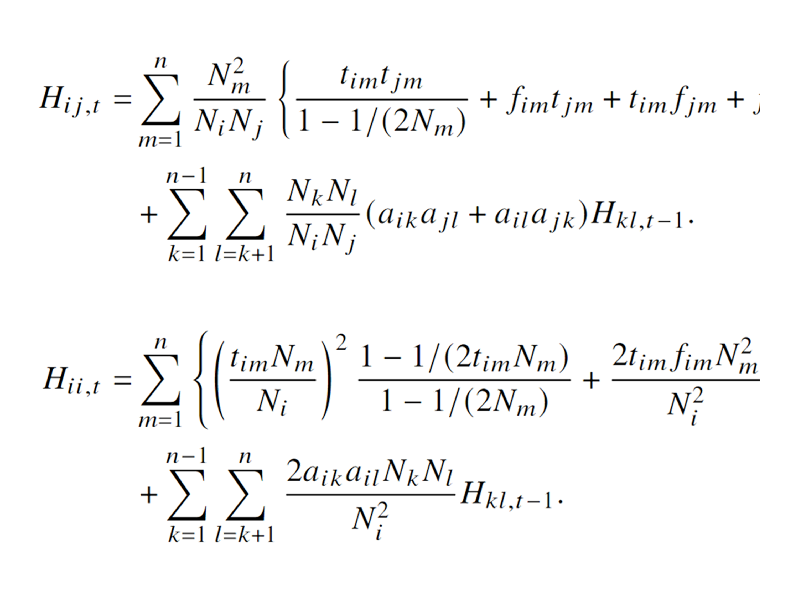
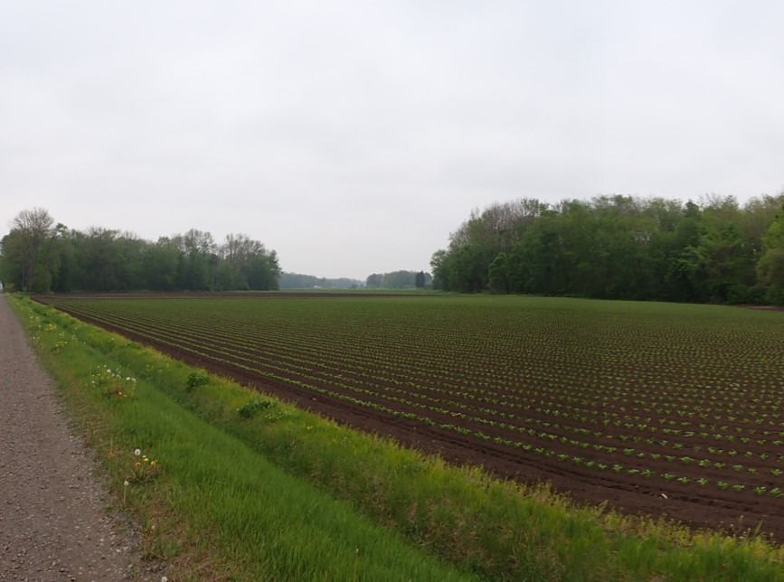
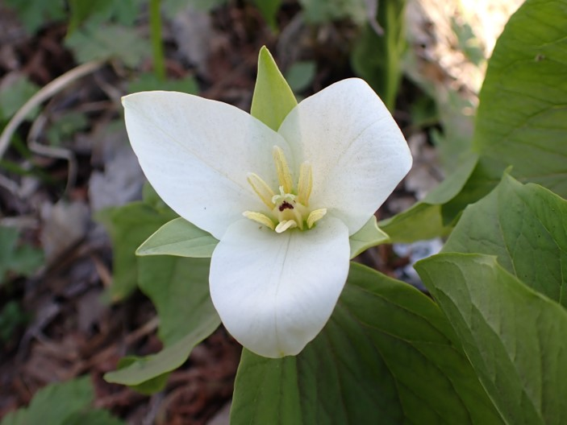
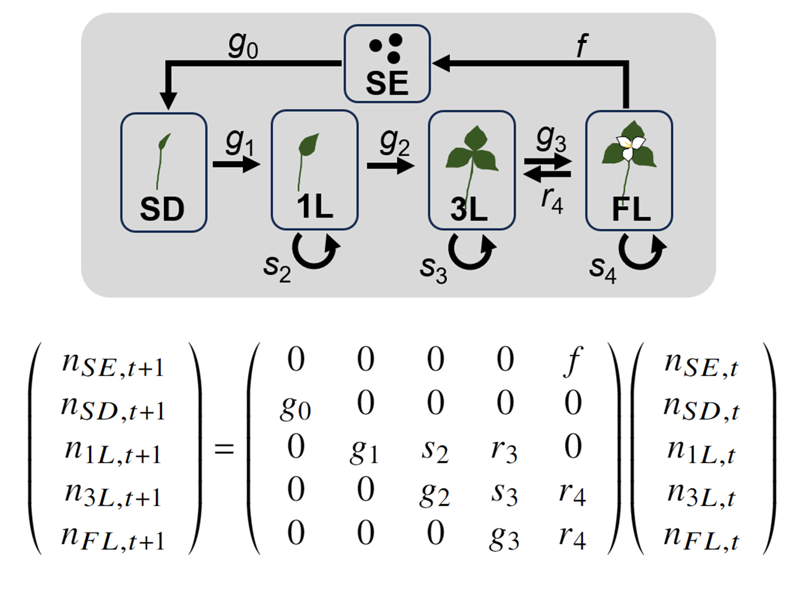
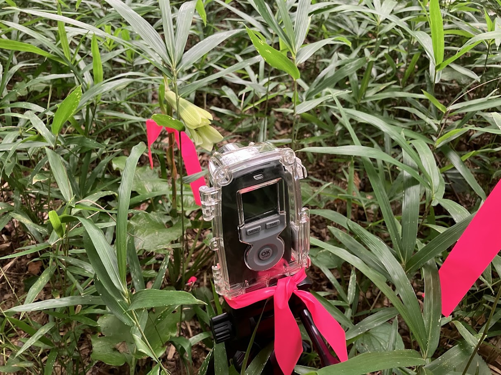
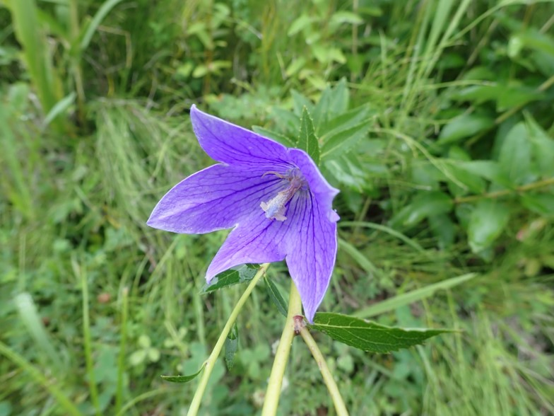
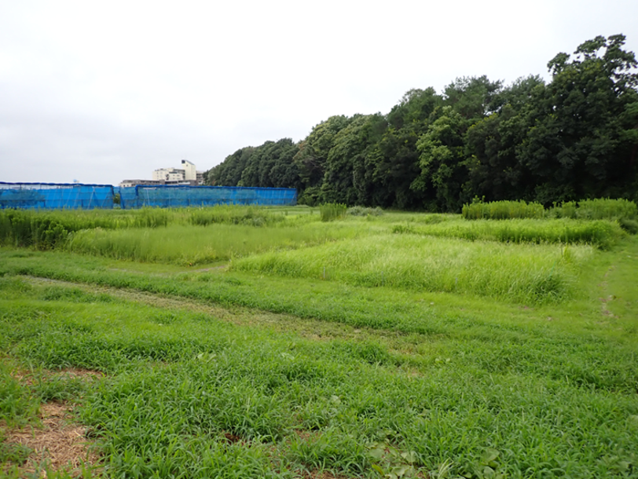
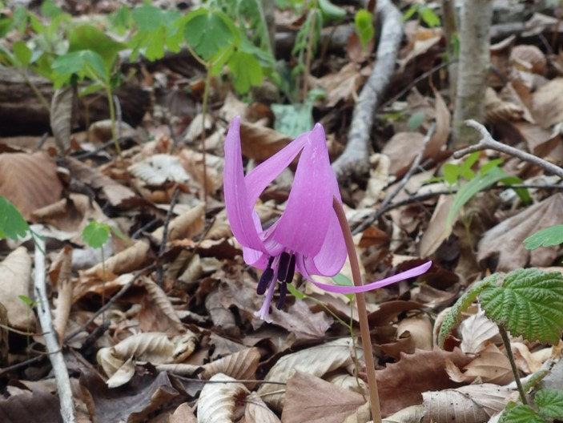
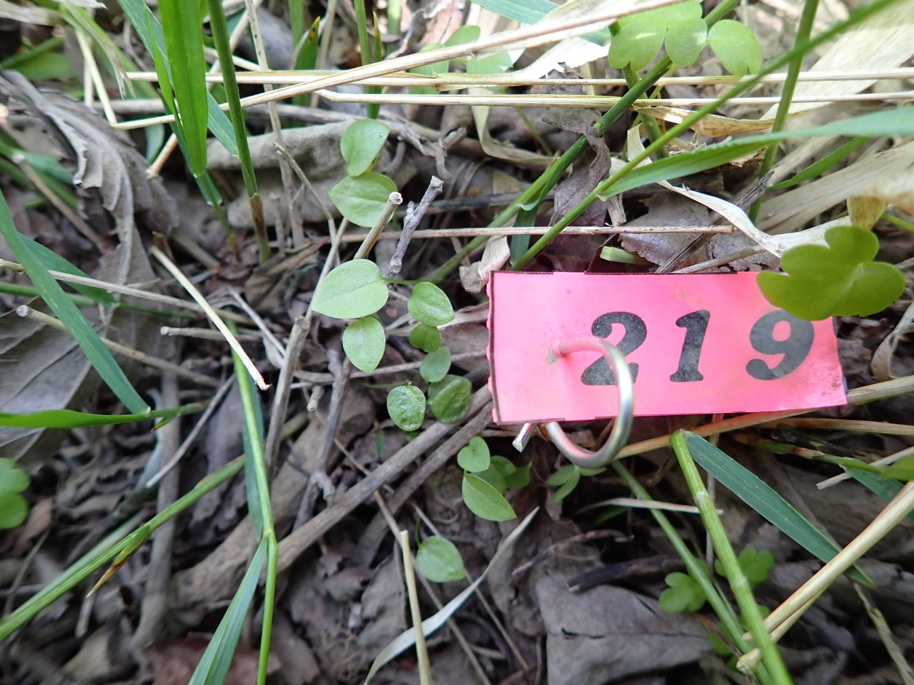
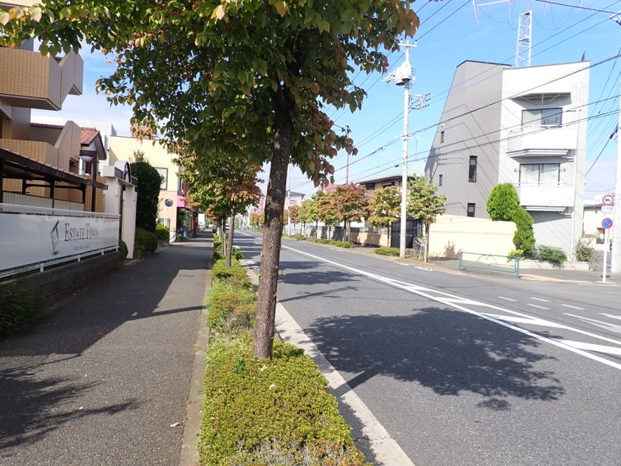
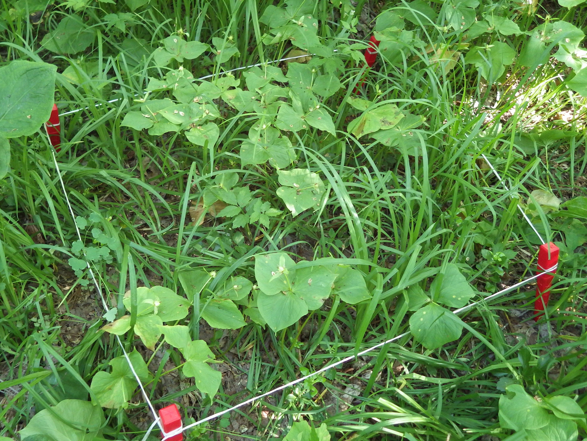
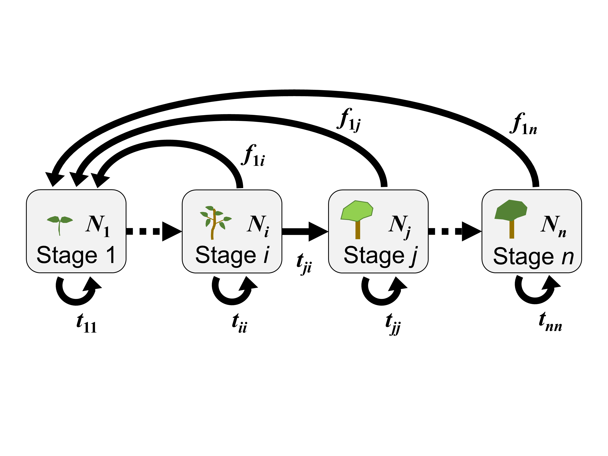
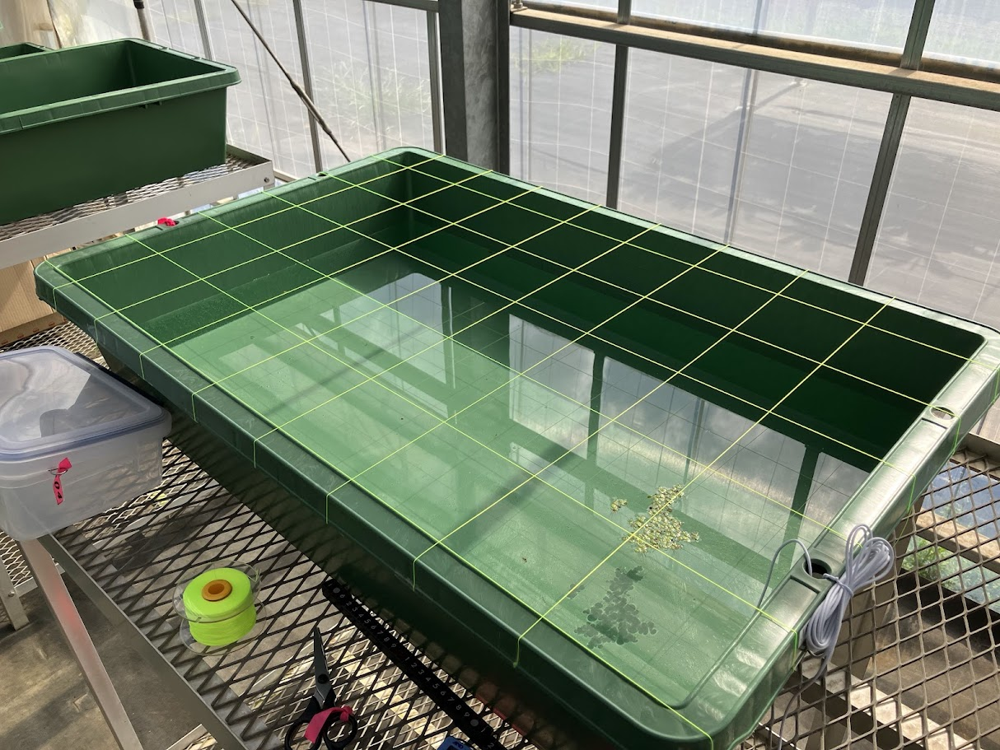